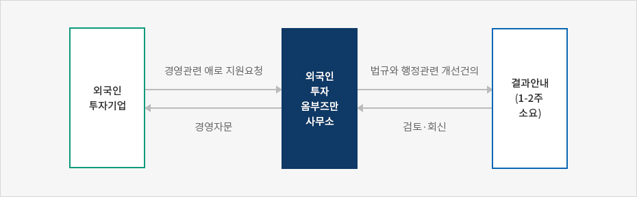
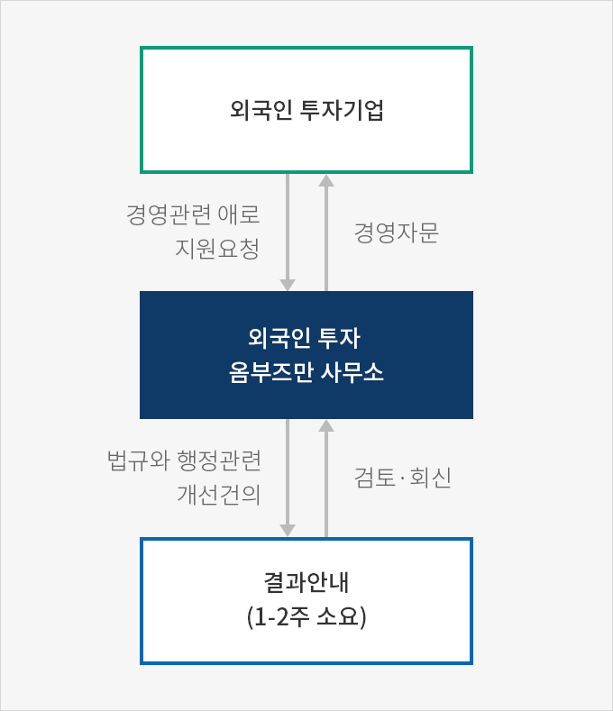

외국인투자 옴브즈만
- Home
- IK 서비스
- IK 소개
- 외국인투자 옴브즈만
외국인투자옴부즈만 기능과 권한
위촉 및 기능
외국인투자옴부즈만은 산업통상자원부 장관의 제청과 외국인투자위원회의 심의를 거쳐 대통령이 위촉한다. 외국인투자옴부즈만은 외국투자가 및 외국인투자기업의 애로사항에 관한 조사와 처리, 외국인투자제도의 개선방안 마련과 관계 행정기관 및 공공기관에 대한 이행 건의 및 그 밖에 외국투자가 및 외국인투자기업의 애로사항 처리업무에 필요한 제반 업무를 수행한다.권한
-
외국인투자옴부즈만은 외국투자가 및 외국인투자기업의 애로사항을 처리하기 위하여 필요하면 관계 행정기관 및 유관기관의 장에게 다음의 사항에 대하여 필요한 협조를 요청할 수 있다. 이 경우 요청을 받은 관계 행정기관 등의 장은 특별한 사유가 없으면 이에 따라야 한다.
- 관계 행정기관 등에 대한 설명 또는 대통령령으로 정하는 기준에 따른 자료의 제출
- 관련직원 · 이해관계인 등의 의견진술
- 현장방문 협조
- 외국인투자옴부즈만은 외국투자가 및 외국인투자기업의 애로사항 처리결과에 따라 필요하면 해당 관계 행정기관 및 공공기관의 장에게 관련 사항의 개선을 권고할 수 있다.
※ 관련규정 : 「외국인투자 촉진법」 제15조의 2 제③항, 제④항
고충처리기구와 홈닥터제도
고충처리기구
외국인투자옴부즈만의 업무를 지원하기 위하여 KOTRA에 고충처리기구를 두며 고충처리기구의 장은 외국인투자옴부즈만이다. 고충처리기구의 장(외국인투자옴부즈만)은 외국투자가 및 외국인투자기업의 애로사항을 처리하기 위하여 관계 행정기관이나 유관기관에 협조요청을 할 수 있다. 이 경우 협조요청을 받은 기관은 7일 이내에 그에 대한 처리결과 또는 의견을 통보하여야 한다.※ 관련규정 : 「외국인투자 촉진법 시행령」제21조의4제③항
홈닥터 제도
외국투자가 및 외국인투자기업의 애로사항을 효율적으로 처리하기 위하여 지역별 · 투자기업별로 전담 홈닥터(고충처리전담요원)를 지정하여 운영하고 있다.- 지원분야 : 노무/인사, 조세 / 세무, 환경, 금융 / 외환, 관세 / 통관, 건설, IT& 지식재산권, 정주환경 등
고충처리 절차
외국투자가 또는 외국인투자기업의 애로사항의 고충처리 절차는 아래와 같이 진행된다.
- 전문위원(홈닥터)의 전화, 현장방문, 온라인, 이메일 등으로 접수된다
- 고충 접수 후 담당 전문위원은 해당 고충 내용을 검토한 후 관련기관이 있을 경우 해당 기관을 접촉하여 해결 방안을 모색한다.
- 고충처리 관련 사항은 KOTRA 고객관리시스템(SCRM)에 입력·관리하며 종결 과제는 해당 기업에게 통보하며 지원을 완료한다.
※ 출처 : 2018 외국인투자옴부즈만 연차보고서(2019.4)
고충처리 절차



- 외국인 투자기업(경영관련 애로 지원요청)
- 외국인 투자 옴부즈만 사무소(법규와 행정관련 개선건의)
- 결과안내(1-2주 소요,검토·회신)
- 외국인 투자 옴부즈만 사무소(경영자문)
- 외국인 투자기업

외국인투자관련 규제정보 서비스
외국인투자옴부즈만 사무소는 국무조정실 규제개혁위원회와 함께 규제 입법과정에서 소외받는 외국인투자기업의 현장의견을 수렴·반영하기 위하여 온라인 서비스인「 외국인투자 관련 규제정보서비스」를 운영하고 있다. 정부와 국회에서 입안되는 외국인투자 관련 규제 내용을 영문으로 번역하여 제공하고, 외국인투자기업으로부터 제기되는 의견을 관련 부처에 전달하고 있다.
서비스 내용
| 구분 | 서비스 내용 |
|---|---|
| 정부입법 | 정부발의 규제관련 신설 및 강화 법안(시행령, 시행규칙)에 대한 영문 번역, 요약 제공 |
| 관련 법안 내용에 대한 외국인투자기업 의견 댓글 수렴, 영문 번역 및 정부 담당 부처 전달 | |
| 의원입법 | 의회 발의 규제 관련 신설 및 강화 법안에 대한 영문 번역, 요약 제공 |
| 관련 법안 내용에 대한 외국인투자기업 의견 댓글 수렴, 영문 번역 및 정부 담당 부처/의회 관계자 전달 | |
| 규제개혁신문고 (기존규제 개선건의) |
시행 중에 있는 기존 규제 관련 건의사항 수렴, 정부 소관부처 답변 전달 |